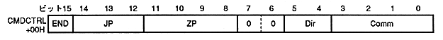

END | End bit |
0 | Drawing command or coordinate setting command (other than drawing end command): |
1 | End drawing command |
JP | Jump format | Process | |||||||||||||||||||||||||||||
bit 14 | 13 | 12 | |||||||||||||||||||||||||||||
0 | 0 | 0 | After processing this table, it automatically moves to the next table (address + 20H) | ||||||||||||||||||||||||||||
0 | 0 | 1 | After processing this table, move to CMDLINK table | ||||||||||||||||||||||||||||
0 | 1 | 0 | After processing this table, call the CMDLINK table subroutine | ||||||||||||||||||||||||||||
0 | 1 | 1 | After processing this table, return to the main routine (CMDLINK | ||||||||||||||||||||||||||||
1 | 0 | 0 | Move to the next table (address + 20H) without processing this table | ||||||||||||||||||||||||||||
1 | 0 | 1 | Move to this CMDLINK table without processing this table |